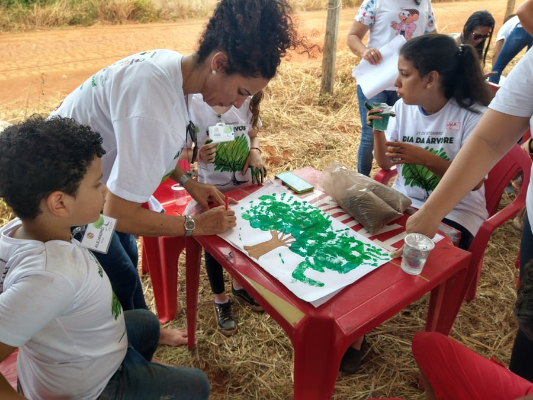

Events
Tree planting, spring activities, technical meetings and work with students: environmental awareness happens in the field.
Upcoming events
Past events
A record of IPAC’s activities.
Videos
Video records of IPAC’s field work (in Portuguese).